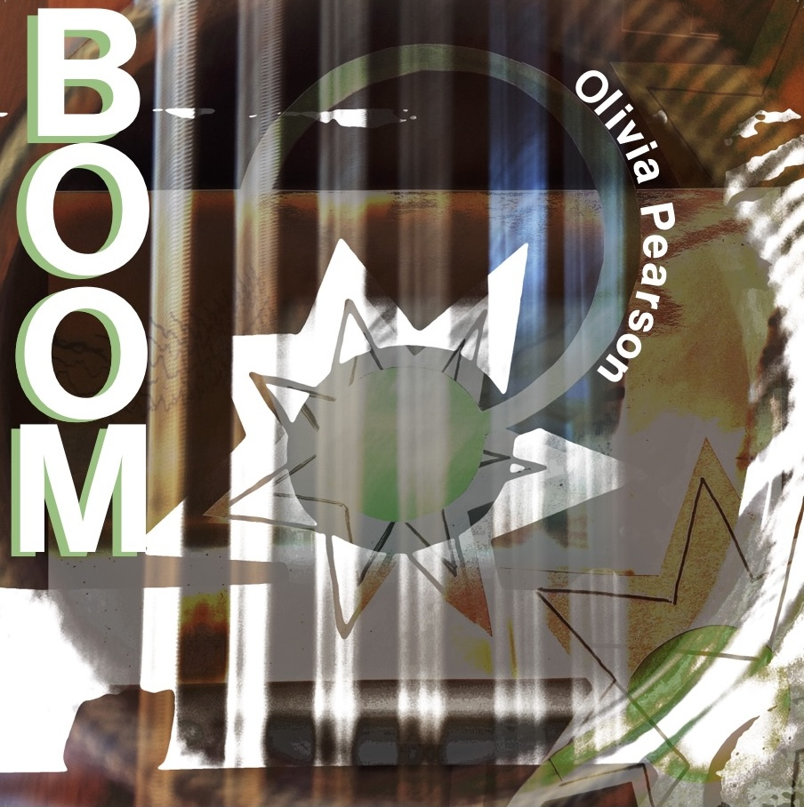
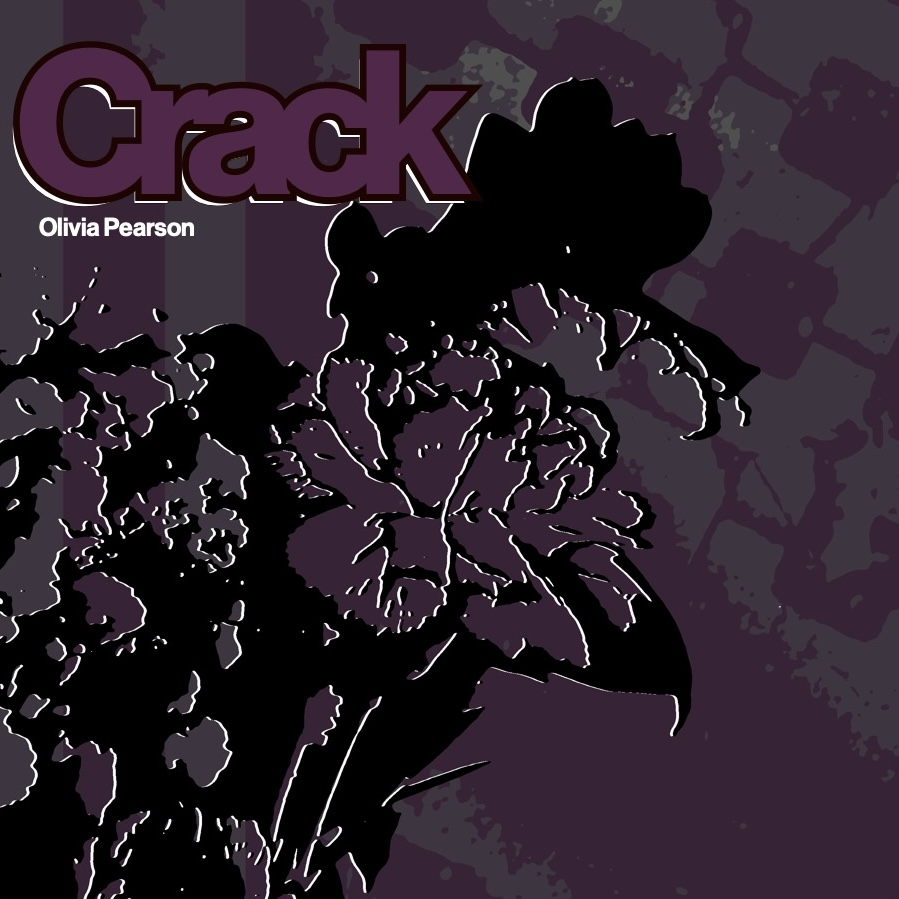
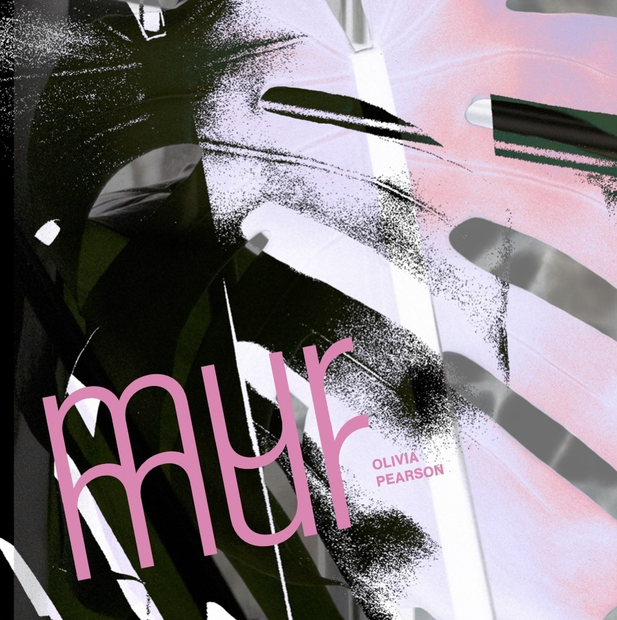

02 / ALBUM ARTWORK / GRAPHIC SYSTEMS
ALBUM COVER DESIGNS
Translating sound into visual form through typography, color, and composition.





01 / OVERVIEW
This project explores how sound can be interpreted visually through a series of experimental album covers.
Each composition uses typography, color, and image-making techniques to create a distinct visual response.
02 / CONCEPT
The concept focuses on translating the characteristics of different sounds into visual language.
Through experimentation with contrast, texture, movement, and composition, each cover expresses a different auditory quality.
03 / PROCESS
The design process involved exploring different typographic arrangements, layering techniques, and image treatments to establish a visual relationship between sound and form.
The covers were developed using Adobe Photoshop and Adobe Illustrator.
04 / FINAL OUTCOME
The final collection consists of five album covers: Boom, Crack, Gurgle, Murmur, and Rattle.
Together, they demonstrate how typography and imagery can communicate different sounds while maintaining a cohesive design approach.